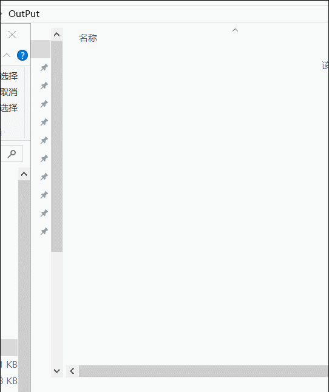

前言
表弟做财务工作，每周都要处理一堆Excel，面对大量的数据，不仅人很疲劳，眼睛也很疲劳，我了解了他的工作之后，就决定帮他做一个小工具来节省劳力。
最终效果图
使用

结果

需求
从一个Excel数据源表格中，根据Type字段筛选出EMS的数据，并且一个公司做出一个发票收执。
发票收执模板
手动操作的话工作量非常大，工具操作的话就非常非常方便了。
NPOI
简介
NPOI是指构建在POI 3.x版本之上的一个程序，NPOI可以在没有安装Office的情况下对Word或Excel文档进行读写操作。
POI是一个开源的Java读写Excel、WORD等微软OLE2组件文档的项目，NPOI是对应的.net库。
优势
（一）传统操作Excel遇到的问题：
- 如果是.NET，需要在服务器端装Office，且及时更新它，以防漏洞，还需要设定权限允许.NET访问COM+，如果在导出过程中出问题可能导致服务器宕机。
- Excel会把只包含数字的列进行类型转换，本来是文本型的，Excel会将其转成数值型的，比如编号000123会变成123。
- 导出时，如果字段内容以“-”或“=”开头，Excel会把它当成公式进行，会报错。
- Excel会根据Excel文件前8行分析数据类型，如果正好你前8行某一列只是数字，那它会认为该列为数值型，自动将该列转变成类似1.42702E+17格式，日期列变成包含日期和数字的。
（二）使用NPOI的优势
- 您可以完全免费使用该框架
- 包含了大部分EXCEL的特性(单元格样式、数据格式、公式等等)
- 专业的技术支持服务
- 支持处理的文件格式包括xls, xlsx, docx.
- 采用面向接口的设计架构( 可以查看 NPOI.SS 的命名空间)
- 同时支持文件的导入和导出
- 基于.net 2.0 也支持xlsx 和 docx格式(当然也支持.net 4.0)
- 来自全世界大量成功且真实的测试Cases
- 大量的实例代码
- 你不需要在服务器上安装微软的Office，可以避免版权问题。
- 使用起来比Office PIA的API更加方便，更人性化。
- 你不用去花大力气维护NPOI，NPOI Team会不断更新、改善NPOI，绝对省成本。
- 不仅仅对与Excel可以进行操作，对于doc、ppt文件也可以做对应的操作
NPOI之所以强大，并不是因为它支持导出Excel，而是因为它支持导入Excel，并能“理解”OLE2文档结构，这也是其他一些Excel读写库比较弱的方面。通常，读入并理解结构远比导出来得复杂，因为导入你必须假设一切情况都是可能的，而生成你只要保证满足你自己需求就可以了，如果把导入需求和生成需求比做两个集合，那么生成需求通常都是导入需求的子集，这一规律不仅体现在Excel读写库中，也体现在pdf读写库中，目前市面上大部分的pdf库仅支持生成，不支持导入。
C#操作NPOI
获得目录
1 |
|
深度递归遍历获得excel文件
1 |
|
读取Excel
1 | static void ReadOneExcel(string fileName) |
写入Excel
1 | public static void WriteToExcel(string filePath, string name, List<VATModel> data) |
设置cell格式
1 | //宋体11 加粗 居中 右上方边框加粗 |
写入cell数据
1 | static void SetCellValue(ICell cell, object obj) |
合并cell
1 | CellRangeAddress region = new CellRangeAddress(0, 0, 0, 5); |
写入文件
1 | try |
批处理
1 | @echo off |